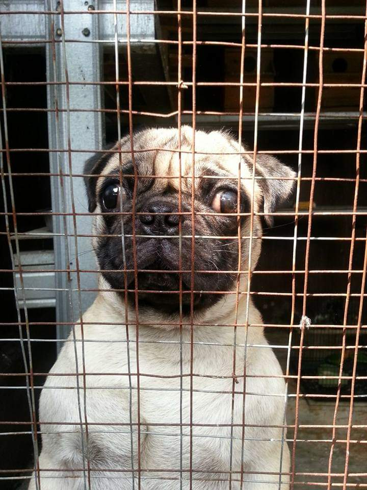

Susu SGM Mengembangkan Otak Penghuni Kingdom
Awalnya mereka adalah sosok yang sederhana, mahluk yang menyukai ketenangan saat mereka terlelap.
Akhirnya mereka menyadari jika mereka bisa mendapatkan perhatian lebih dari manusia, saat menyadari kehadiran kamera dan snack.
Mengandalkan keimutan yang mereka miliki,kecerdikan dan kerusuhan yang mereka timbulkan. Akhirnya mereka mencoba bekerja sama membantu owner mereka.
Sudah saatnya manusia lain tahu bahwa ada ras bernama "pug" hidung peseq,king and queen of drama, saatnya mengumpulkan pecinta peseq.
Saatnya mereka mencoba untuk eksis!
Usia: 5thn (35thn usia manusia)
Hobi: Mengasuh anak-anak peseq, bernyanyi dan berjemur.
Sifat: Takut dan jijik dengan air.
Papa Billi pejantan yang diragukan kejantanannya saat itu. Hanya memiliki satu telur membuat dokter-dokter mengatakan bahwa dia tidak akan memiliki keturunan. Tetapi Raja dengan bulu hitam dan mata bulat kekanakan mematahkan semua keraguan manusia. Billi memiliki enam anak dan membuktikan menjadi ayah sekaligus suami yang bertanggung jawab.
Nyaris melayang ke surga anjing ketika saraf-sarafnya terbakar akibat salah pemberian salep.
Sekarang King of Drama from Peseq's Kingdom, kembali menagih dimanjakan dengan jeritan ala banshee.
Usia: 4thn (28 thn)
Status: Mati
Hobi: Mencari blower dan tidur.
Tugas: Menjemput raja saat hujan.
Queen of Peseq from Peseq's Kingdom bernama Bobo. Betina cantik yang bahkan bisa menunjukkan ras murni seperti Husky.
Saya serius tidak bercanda,Bobo jika berjalan selalu mengangkat kepala dan membusungkan dada, mendadak mengeluarkan aura ratu yang tidak terbantahkan.
Hobinya berjemur dan tidur,dia akan melarikan diri dan tidur di depan blower sampai dijemput Billi untuk menyusui, Bobo selalu bisa membuktikan bahwa masih ada peseq yang mengingat bahwa mereka bangsawan. Aku yo kagum kok.
Tuhan juga menyayangi ratu kami karena Tuhan lebih memilih ratu kembali ke surga para pug.Dan kerusuhan anak-anaknya dimulai.

Usia: 4thn (28thn usia manusia)
Status: Anak kedua dari enam peseq
Kelebihan: Lidah yang panjang, bola mata cokelat.
Hobi: Merengek saat ditinggal Nene dan berbaring jika disuruh keluar rumah.
Dia punya kisah sendiri jadi di sini singkat aja.Happy yang selalu tertidur setelah dinyanyikan lagu rohani, anak manja yang tidak bisa mandiri tanpa kedua adiknya.
Warna cokelat,bola mata cokelat yang bersinar jernih dan lidah panjang.Happy adalah princess tercantik setelah queen.
Relawan untuk diadopsi setelah adik perempuannya shock saat mau diadopsi,princess of drama dan kisahnya bisa kalian baca nanti.
PRINCE OF DRAMA!! Cerdik,Manja,Keras Kepala!
Usia: 4thn (28thn usia manusia)
Status: Anak ketiga dari 6 peseq.
Keahlian: Melompati pagar, mendorong pintu, menyelinap masuk, menahan pintu.
Hobi: Masuk ke rumah, melompat naik dan tidur di tempat tidur.
Penggambaran paling pas untuk peseq yang terkenal dengan kegantengannya ini.
Rei sama seperti kedua adik dan mamanya, saya sudah menyediakan tempat untuk membahas pangeran berekor ini.
Saya berterimakasih berkat kecerdikan Rei membuat orangtua saya tidak terkena serangan pikun, kami harus selalu memutar otak mengimbangi kecerdikannya. Masa manusia kalah sama peseq.
Usia: 4thn
Status: Anak keempat dari 6 peseq.
Julukan: Putri Mendengus.
Kelebihan: Hidung yang sejajar dengan mulut.
Princess yang terakhir ini kesayangan saya,pendiam dan selalu mengalah atau dikalahkan. Pernah mengalami kecelakaan,selalu pasrah kalau minum obat tapi kabur saat minum jamu.Berulang kali melahirkan dan yang selamat hanya satu,kasihan sih dia selalu berharap anaknya selamat semua.
Pemilik wajah judes dengan hidung paling peseq diantara keluarganya,pingin meluk.
Tapi dia juga salah satu pendukung semua drama yang terjadi di keluarga kami,keluarga peseq maupun keluarga manusia. Tapi gak rugi juga sih mengenal satu putri yang judes ini.
Our little prince! Anak dari hasil pernikahan Nene dan Rei, istimewanya lagi dia menjadi satu-satunya yang selamat dari beberapa kelahiran.
Terlahir menjadi anak sulung dari empat bersaudara menjadi satu-satunya yang selamat.
Pertama lahir dengan berat tidak lebih dari anak tikus dan menderita hidrosifalus. Sekarang menjadi pangeran dengan obesitas dan terancam terkena jantung! Sungguh luar biasa!
Lucky mendapatkan nama setelah saya melihat dia selamat setelah 7 menit mulut dan hidung tertutup ducktape,lakban silver untuk peralatan pertukangan
Lucky juga beruntung karena diadopsi keluarga kaya yang memanjakannya, walaupun saat pulang ke Kerajaan dia tetaplah pangeran.
Cerita Lucky cukup panjang sebagai bintang tamu istimewa, dia tumbuh dengan tubuh yang kurus dan terkadang terjatuh karena keberatan kepala.
Saya membawanya ke dokter nyoman, dokter hewan yang sangat rekomen.Setiap minggu selalu dikontrol dan sekarang Lucky harus kontrol dengan alasan berbeda yaitu kegemukan.